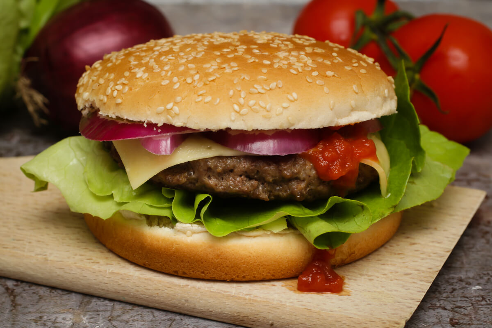

Hamburger

Description
A hamburger grillezett, fűszeres marhahúsmassza, lapos, enyhén pogácsa formájú a mi fasírtunkhoz hasonló ételféleség,
amelyet zsemle formájú péksüteménybe helyeznek. A gyorséttermek jellegzetes kínálata. Gyakran tálalják hasábburgonyával.
Ingredients:
A hamburgerhez:
- 4db puffancs vagy hamburgerzsemle
- csalamádé
- lilahagyma
- ketchup
- mustár
- sajt
A húspogácsáhozz:
- 50dkg darált hús
- 1fej hagyma
- só
- őrölt bors
- 2ek mustár
- 4ek ketchup
- 1db tojás
- 1ek zsemlemorzsa
Steps:
- A darált húst egy tálba tesszük, megsózzuk, 2-3 mokkáskanálnyi borsot szórunk bele,
hozzáadjuk a nagyon apró kockákra vágott hagymát, a mustárt, a tojást, és kanalanként a ketchupot.
- A masszát összegyúrjuk, és 4 egyenlő kupacra osztjuk, amelyekből szép, formás húspogácsákat készítünk.
Célszerű olyan nagyságú pogácsákat készíteni, amekkora a puffancs átmérője.
Egy ecsettel a húspogácsák mindkét oldalát kicsit megolajozzuk, és egy jénaira fektetve,
fóliával lefedve 1-2 órára a hűtőbe tesszük, hogy az ízek jól összeérjenek.
- Egy teflonserpenyőt kissé megolajozunk, és kis lángon, lassan (mindkét oldalát kb. 8-8 perc alatt) pirosra sütjük.
- A puffancsot kettévágjuk, megrakjuk egy kis csalamádéval, rátesszük a húspogácsát, egy szelet sajtot,
lilahagymát, ketchupot, mustárt, és előmelegített sütőben 5 perc alatt átmelegítjük a hamburgereket.